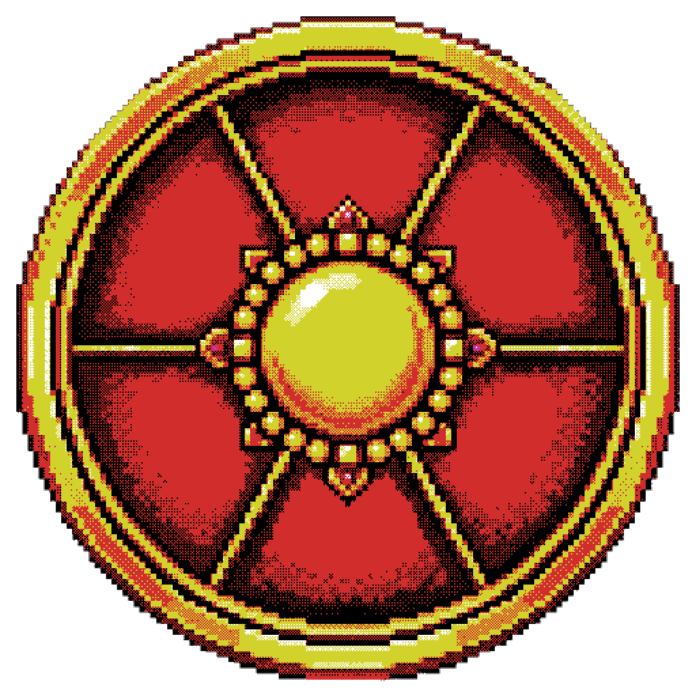
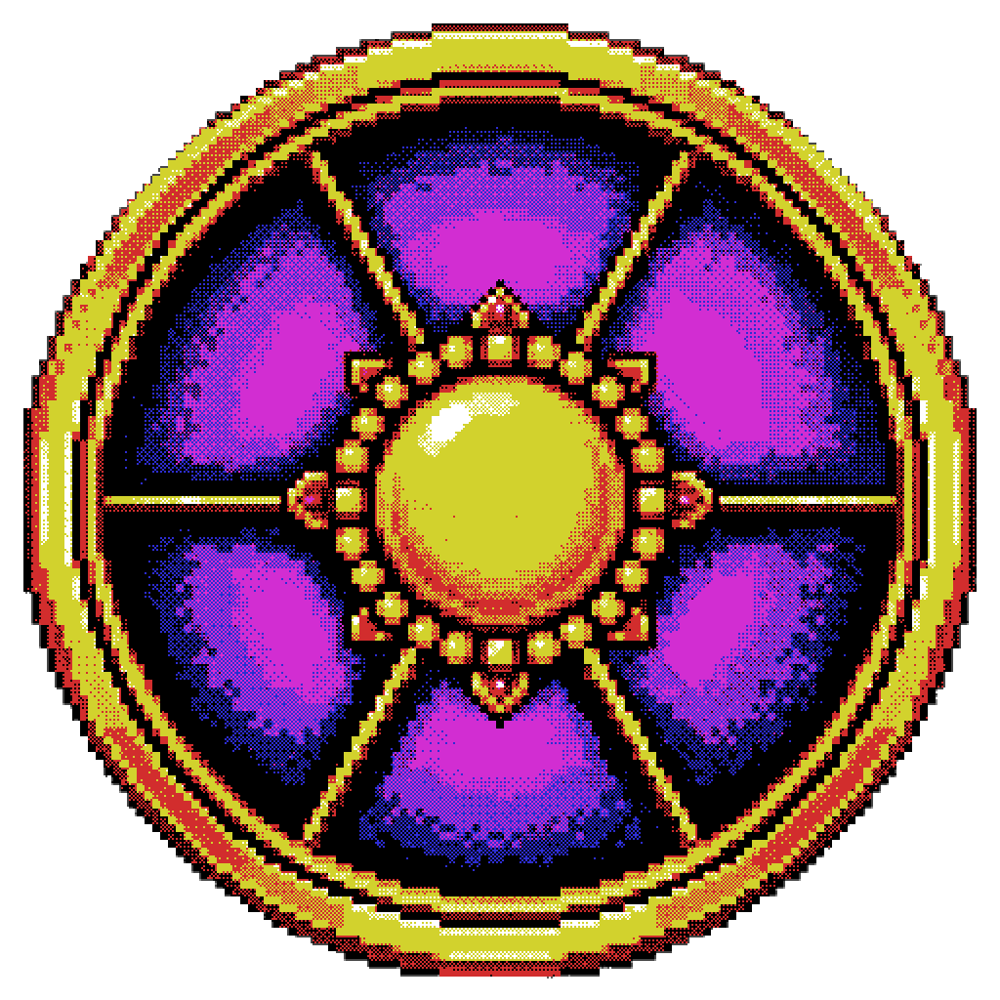

Al completar la 12
Aparece la ruleta morada anunciando el inicio y el HUD cambia a PvP Activo.
Selecciona un color para revelar sus posibilidades. En móvil, los controles se mantienen táctiles y la información se adapta al ancho disponible.
Aparece la ruleta morada anunciando el inicio y el HUD cambia a PvP Activo.
El PvP dura 2 horas. Pueden ocurrir entre 1 y 3 ruletas normales según el intervalo, pero no cuentan para el siguiente ciclo.
La ruleta morada anuncia el cierre y el HUD vuelve a mostrar PvP Desactivado. El conteo de 12 comienza de nuevo.

Solo aparece cuando el Evento avanza de fase por sus hitos de progresión.

Presenta el inicio y el final del periodo global de PvP.

Las ruletas normales del ciclo usan amarillo, naranja, azul y verde. La roja queda reservada para progresión y la morada para el inicio o cierre del PvP. El visor de abajo permite consultar todos los colores y sus posibles efectos. Las bendiciones y maldiciones duran 30 minutos.